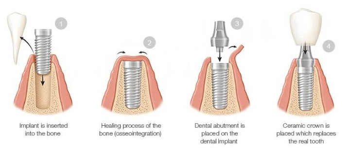
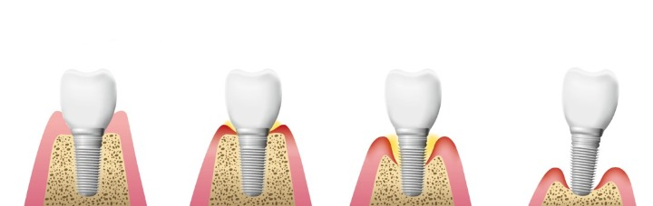

Dental Publications
This article explains the latest dental treatment techniques, and the most successful preventive measures for enjoying strong healthy teeth, in addition to dental implants, dental bridges, orthodontics, and other miscellaneous information

Learn about the Dental Implant procedure and Its Pros & Cons
What is dental implant?
A dental implant is one of the treatments for replacing missing teeth, it has recently become an integrated treatment in dentistry to treat complete and partial teeth loss, dental implants have many advantages over traditional dentures.
We can say that a dental implant is a root made of suitable materials, it provides stability and support for fixed or moveable prostheses.
Table of Content
Dental implant procedure step by step pictures

Dental implant duration
A Dental Implant can usually take between six to eight months and require two surgical procedures.
- At the initial surgical appointment, the dental implant or post is gently placed into the bone socket in place of the missing tooth.
For anxious patients, the procedure can be performed using local anesthesia or general anesthesia.
- As the jawbone heals, it grows around the implant and holds it in place. This healing process usually takes three to six months, depending on the patient.
- Once the implant is firmly fused to the bone, and the second stage begins, the oral surgeon or dentist will reveal the implant and place a small structure called the abutment, which will act as an anchor for the artificial teeth.
- An artificial tooth or crown is fixed by a dentist.
The dentist will take an impression and send the model to a dental laboratory which will manufacture the replacement teeth to meet your specifications.
The final position of the tooth requires only a short and simple appointment.
In selected cases, Progression in dental implant technology has made it possible to extract teeth and place crowns in one visit, which greatly simplifies the surgery.
Tooth implant without surgery
As an alternative to the traditional Implant method that often requires an extraction, healing period, placing the implant, and then another healing period, same-day Implant has shown very promising results.
Days before the normal tooth is removed, the oral surgeon can take a 3D digital scan of the tooth and the cells surrounding it, which will act as a model for the new tooth.
These records will then be transferred to a state-of-the-art laboratory where a completely new tooth can be designed in just days.
This pioneering procedure, known as the non-surgical tooth-replacement system, has made the implant procedure more efficient than the traditional technique.
After Dental Implant
Sometimes the effects of surgery are minimal, so all of the following effects and instructions may not apply to you however when in doubt, follow the directions or contact us.
Instructions after dental implants
The patient’s awareness and commitment to the instructions contribute to the success of the operation by following below-listed tips:
- Oral hygiene
A day after the procedure, it is recommended that you start rinsing with warm salt water (1 teaspoon of salt in a cup of warm water)
- Avoid smoking
It is recommended to avoid smoking for at least 3 days after surgery, as this increases the risk of infection and may delay healing.
- Limiting physical activity
Reducing physical activity during the first 24-48 hours after surgery. Excessive stress may lead to bleeding and discomfort after surgery.
When you are lying down, raise your head on a pillow.
- Post-operative visits
It is important to return to see the doctor after the operation, one to two weeks of treatment. Contact us if you have any questions or problems before that.
Read more : Dental Implants in Turkey
what can you eat after dental implant surgery?
You can start with soft foods such as mashed potatoes, macaroni, cheese, or scrambled eggs until the effect of the local anesthetic wears off.
You can resume a regular diet as soon as the anesthesia wears off and the feeling returns; However, it is preferable not to attempt chewing directly on the implant sites.
how to heal faster after dental implants?
The stitches used in the operation are dissolvable unless otherwise informed, and will fall off on their own. This generally occurs in the first week after surgery, but it can take from 4 to 10 days.

Common questions about Dental Implants
Common questions about Dental Implants
In most cases, the dental implant procedure itself causes very little pain, but once the anesthetic wears off, patients often feel some discomfort, this of course varies from patient to patient based on the level of pain tolerance and the complexity of the procedure.
Usually, you may feel some pain and discomfort until 10 days after the surgery, but the dentist prescribes pain relievers to help. There will also be swelling, and it should subside after 3-5 days. Dental implants cause pain, but for a week to 10 days, maximum.
No direct link has been found between dental implants and oral cancer, but in many cases, oral cancer appears around dental implants as chronic inflammation.
Yes, it is possible if blood sugar is controlled keeping in mind that the failure rate of dental implants is very high in diabetics because surgical implant wounds may take longer to heal, and diabetics are more likely to develop infections.
Dental implant is a surgical fixture that is placed into the jawbone and allowed to fuse with the bone for a few months. The dental implant acts as a replacement for the root of a missing tooth. In turn, this "artificial tooth root" serves to hold a replacement tooth or bridge
Yes, you will experience some pain after getting an implant. During the dental implant procedure, there shouldn't be a pain as you will have been given anesthesia. However, as the numbness wears off, you will most likely start to feel some discomfort.
The cost of a dental implant is 250 euro per tooth.
Dental implants are surgically placed in your jawbone, where they serve as the roots of missing teeth. Because the titanium in the implants fuses with your jawbone, the implants won't slip, make noise or cause bone damage the way fixed bridgework or dentures might.
Dental implants can be done very well in one day.
A dental implant is considered a safe procedure but just like any other procedure some complications may occur like: • Infection at the implant site. • Injury or damage to surrounding structures, such as other teeth or blood vessels. • Nerve damage, which can cause pain, numbness, or tingling in your natural teeth, gums, lips, or chin.
what are the risks of dental implants?
Dental implants do not differ from any other surgery in terms of risks and complications as follow:
- Infections at the implant site.
- Injury or damage to surrounding structures, such as other teeth or blood vessels.
- Nerve damage, which can cause pain or numbness in your natural teeth, gums, lips, or chin.
- Sinus problems when embedding dental implant post in the upper jaw one of the sinus cavities.
Loose Dental implant
Dental implants may move and it is a common cause of anxiety among patients. Here are some common reasons:
- Failure of bone fusion with the root of the dental implant.
- Excessive bone loss.
- Acute inflammation in the implant area.
It is easy to predict the movement of the dental implant.
Therefore, it is advisable to visit the dentist to examine it and have X-rays to confirm the condition of the implant.
This will ensure detecting infections early enough for treatment.
With our modern equipment and experience of our doctors, Ilajak Medical can handle any dental problems with high efficiency and accuracy.
Read more : Dental Veneers
Dental implant pain after crown placement
As we mentioned earlier, it is normal for the patient to feel slight or moderate pain for a period that does not exceed 10 days, but if the pain persists more than that or faded and then appeared after a month or more, then there must be a problem that can be due to several factors:
- Low blood supply to the site.
- Tissue or nerve damage.
- Increased load and pressure on the implant.
- Autoimmune disease.
Contact us, For evaluating dental implant conditions and prepare the best treatment plan at reasonable prices.
Latest Articles, Health News, Clinical Research, and more.
Keratoconus and cataracts , symptoms and types
What is Keratoconus, How it looks and what are the symptoms? Also, find out Keratoconus’s types and stages , Learn more with ILAJAK Medical.
Best Spa Resorts with Medical Services clinics in Turkey.
In this article, we will learn about the importance of health resorts and the treatment services they offer and the top and famous health & medical resorts in Turkey
Zirconia teeth type and costs in Turkey 2021
Zirconia dental crowns and bridges are used to treat and protect the affected teeth due to decay or fractures, etc, In this article we will learn about the advantages and drawbacks of Zirconia Crowns and bridges
Benefits of porcelain teeth and costs in Turkey 2021
Porcelain crowns and veneers are used to strengthen and protect damaged teeth due to decay or cracks or any other reason. In this article, we will discover dental porcelain and its advantages and risks.